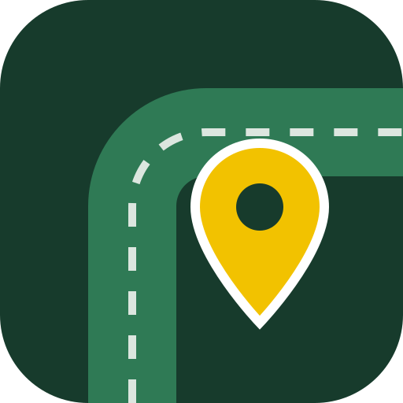

Nahfuchs
Alles, was du im Alltag um die Ecke suchst – auf einer Karte.
Was ist das?
Nahfuchs zeigt dir in ganz Deutschland die nächsten Briefkästen (mit Leerungszeiten), Postfilialen, Paketshops und Paketstationen aller Anbieter, Glas-, Papier- und Altkleidercontainer, Wertstoffhöfe, öffentliche Toiletten, Rast- und Parkplätze, Tankstellen (mit Tankkarten-Filter), Geldautomaten, Apotheken und Ladesäulen – mit einem Tipp zur Route in Google Maps, Apple Karten oder Waze. Unter „Apotheken“ führt ein Hinweis zur offiziellen Notdienstsuche der Apothekerkammern (aponet.de), die zeigt, welche Apotheke gerade Dienst hat.
Die App ist kostenlos und funktioniert ohne Konto.
App öffnenMitmachen
Die App lebt vom Miteinander. Du kannst per Knopfdruck melden, wenn ein Container voll ist, eine Toilette geschlossen oder verschmutzt ist, Zeiten nicht stimmen oder ein Ort verschwunden ist – und neue Orte eintragen. Freitext gibt es bewusst nicht. Neue Orte gelten als bestätigt, sobald drei Personen sie bestätigt haben. Jede Meldung macht die Karte für alle genauer.
Über „Fehlt was?“ (am Ende der Kategorie-Leiste und der Liste) kannst du dir neue Kategorien wünschen und uns sagen, was gut oder schlecht läuft – ebenfalls nur per Antippen. Alles andere gern per E-Mail.
Unterstützen
Nahfuchs ist kostenlos, ohne Werbung und ohne Konto – und soll es bleiben. Domain, App-Store-Gebühren und Datenpflege kosten aber Geld. Wenn du magst, kannst du die App unterstützen, einmalig oder monatlich: ko-fi.com/nahfuchs ↗ (externe Seite). Genauso hilft es, die App weiterzuempfehlen. Danke!
Die Unterstützung ist freiwillig und ohne Gegenleistung. Nahfuchs ist kein gemeinnütziges Projekt; die Unterstützung ist daher nicht steuerlich absetzbar, und es gibt keine Zuwendungsbestätigung.
Datenquellen
Die Orte stammen aus offenen Datenquellen und werden täglich aktualisiert. Vielen Dank an alle, die diese Daten pflegen und bereitstellen.
| Quelle | Lizenz | Orte |
|---|---|---|
| OpenStreetMap-Mitwirkende | ODbL | – |
Tankstellen und Tankkarten: Ob eine Tankkarte angenommen wird, stammt aus OpenStreetMap („bestätigt“ bzw. „nicht akzeptiert“) oder ist aus öffentlich angekündigten Partnerschaften der Kartenanbieter mit Tankstellenmarken abgeleitet („laut Marke üblich“). Die Angaben sind ohne Gewähr. Die Namen der Tankkarten und Tankstellenmarken sind Marken ihrer jeweiligen Inhaber und werden nur genannt, um die Zahlungsmöglichkeit zu beschreiben; Nahfuchs steht in keiner Verbindung zu den Kartenanbietern oder Mineralölgesellschaften. Kraftstoffpreise zeigt Nahfuchs nicht.
Overture Maps: Daten der Overture Maps Foundation (Hinweise zur Namensnennung), je nach Herkunft unter CDLA-Permissive-2.0 (u. a. Meta, Microsoft) bzw. Apache-2.0. Enthält Daten von Foursquare Labs, Inc. unter der Apache License 2.0: „Copyright 2024 Foursquare Labs, Inc. All rights reserved.“ – „Foursquare data was transformed to the Overture schema.“ (NOTICE).
Kartendarstellung: OpenFreeMap, © OpenMapTiles, Daten © OpenStreetMap-Mitwirkende. Geändert: Daten wurden gefiltert, zusammengeführt und für die Kartenanzeige aufbereitet.
Nutzungsbedingungen
Angebot
Nahfuchs ist ein kostenloses Angebot von Andreas Dauns (siehe Impressum). Es besteht kein Anspruch darauf, dass die App jederzeit verfügbar ist; Funktionen können geändert oder eingestellt werden.
Daten ohne Gewähr – bitte vor Ort prüfen
Die Orte stammen aus offenen Datenquellen und aus Meldungen anderer Nutzer. Sie können unvollständig, veraltet oder falsch sein – etwa Leerungs- und Öffnungszeiten oder Angaben zur Barrierefreiheit. Prüfe wichtige Angaben bitte vor Ort oder beim Betreiber. Welche Apotheke Notdienst hat, zeigt ausschließlich die verlinkte offizielle Notdienstsuche.
Tankkarten
Angaben zur Annahme von Tankkarten (z. B. DKV, UTA, Aral/Routex, Shell, LogPay, Esso) sind ohne Gewähr. Sie beruhen auf OpenStreetMap und teils nur auf der Marke der Tankstelle („laut Marke üblich“); einzelne Stationen können abweichen. Die Kartennamen sind Marken ihrer Inhaber; Nahfuchs steht in keiner Verbindung zu den Kartenanbietern. Prüfe die Annahme im Zweifel im offiziellen Stationsfinder deines Kartenanbieters oder an der Kasse.
Regeln für Meldungen
Meldungen bestehen nur aus vorgegebenen Auswahlknöpfen (z. B. „Voll“, „Gibt es nicht mehr“, neuer Ort mit Kategorie); freie Texte sind nicht möglich. Bitte melde nur, was du selbst vor Ort gesehen hast. Offensichtlich falsche oder massenhafte Meldungen können ohne Vorankündigung gelöscht werden; wiederholter Missbrauch kann dazu führen, dass Meldungen eines Geräts nicht mehr angenommen werden.
Rechte an Meldungen
Mit dem Absenden erlaubst du, dass deine Meldung in Nahfuchs angezeigt und – wie die übrigen Kartendaten – unter der Open Database License (ODbL) 1.0 weitergegeben werden darf.
Falsche Meldungen
Ist eine Meldung offensichtlich falsch oder missbräuchlich, schreib uns an und nenne den Ort. Wir prüfen Hinweise zügig und entfernen falsche Meldungen.
Rechtswidrige Inhalte melden
Hältst du eine Meldung oder einen von Nutzern eingetragenen Ort für rechtswidrig (z. B. weil er eine Privatadresse bloßstellt), tippe in der Ortsansicht auf „Rechtswidrigen Inhalt melden“ oder schreib an . Bitte nenne den genauen Ort, warum der Inhalt rechtswidrig ist, deinen Namen und deine E-Mail-Adresse sowie die Erklärung, dass deine Angaben in gutem Glauben richtig und vollständig sind (Art. 16 DSA). Wir bestätigen den Eingang, prüfen den Hinweis zügig, sorgfältig und objektiv, ohne automatisierte Entscheidung, und teilen dir das Ergebnis mit. Entfernte Inhalte werden nicht mehr angezeigt. Von Nutzern eingetragene, noch nicht bestätigte Orte werden außerdem automatisch ausgeblendet, sobald zwei Geräte melden, dass es sie nicht gibt.
Haftung
Wir haften unbeschränkt bei Vorsatz und grober Fahrlässigkeit, bei Verletzung von Leben, Körper oder Gesundheit, nach dem Produkthaftungsgesetz sowie im Umfang einer übernommenen Garantie. Bei leichter Fahrlässigkeit haften wir nur bei Verletzung einer wesentlichen Pflicht, deren Erfüllung die ordnungsgemäße Nutzung erst ermöglicht und auf deren Einhaltung du regelmäßig vertrauen darfst, und dann begrenzt auf den vorhersehbaren, typischerweise eintretenden Schaden. Im Übrigen ist die Haftung für leichte Fahrlässigkeit ausgeschlossen, soweit gesetzlich zulässig. Das Angebot ist unentgeltlich.
Es gilt deutsches Recht. Stand: November 2026
Datenschutz
Kurz gesagt: Kein Konto, keine Werbung, kein Tracking, keine Cookies. Wir zählen nur anonyme Gesamtzahlen (siehe Nutzungsstatistik). Trotzdem fallen beim Nutzen der App einige Daten an. Hier steht genau, welche.
Verantwortlicher
Andreas Dauns, Am alten Brunnen 31, 53474 Bad Neuenahr-Ahrweiler, E-Mail: . Ein Datenschutzbeauftragter ist nicht bestellt, da gesetzlich nicht erforderlich.
1. Aufruf der App (Hosting)
Die App wird über GitHub Pages (GitHub Inc., 88 Colin P. Kelly Jr. Street, San Francisco, USA) ausgeliefert. Beim Aufruf verarbeitet GitHub technisch notwendig deine IP-Adresse und Angaben zum Browser und speichert die IP-Adresse laut eigenen Angaben aus Sicherheitsgründen; wie lange, gibt GitHub nicht an. Wir selbst erhalten von GitHub keine Besucherdaten. Rechtsgrundlage: berechtigtes Interesse an einer sicheren und funktionsfähigen Auslieferung (Art. 6 Abs. 1 lit. f DSGVO). Die Übermittlung in die USA stützt sich auf das EU-US Data Privacy Framework (Angemessenheitsbeschluss der EU-Kommission). Details: Datenschutzerklärung von GitHub.
2. Hintergrundkarte
Die Kartenbilder werden vom Dienst OpenFreeMap (openfreemap.org, Betreiber mit Sitz in Ungarn) geladen. Dabei wird deine IP-Adresse an diesen Dienst übertragen, weil die Karte sonst nicht angezeigt werden kann (Art. 6 Abs. 1 lit. f DSGVO). Laut OpenFreeMap enthalten die Zugriffsprotokolle standardmäßig keine IP-Adressen; Fehlerprotokolle, die IP-Adressen enthalten können, werden nach 7 Tagen gelöscht. OpenFreeMap kann zur Auslieferung das Netzwerk von Cloudflare (USA) nutzen; die Übermittlung stützt sich dann auf das EU-US Data Privacy Framework. OpenFreeMap ist für diese Verarbeitung selbst verantwortlich, Details: Datenschutzhinweise von OpenFreeMap. Schriften und Programmbibliotheken liegen auf unserem eigenen Server.
3. Standort
Wenn du die Standortfreigabe erlaubst, wird dein Standort nur auf deinem Gerät verwendet, um die nächsten Orte zu sortieren. Er wird nicht übertragen oder gespeichert. Du kannst die Freigabe jederzeit in deinem Browser bzw. Betriebssystem widerrufen.
4. Meldungen
Wenn du etwas meldest oder einen Ort einträgst, speichern wir: Art der Meldung, gewählten Zustand bzw. Kategorie, die Position des Ortes, den Zeitpunkt und einen verschlüsselten Schlüssel. Dafür erzeugt die App bei deiner ersten Meldung eine zufällige Geräte-Kennung, die auf deinem Gerät bleibt. In der Datenbank speichern wir nicht diese Kennung, sondern nur einen daraus berechneten Schlüssel, der für jeden Ort anders ist (SHA-256-Hash). So verhindern wir doppelte Bestätigungen, ohne dass sich Meldungen eines Geräts über verschiedene Orte hinweg verknüpfen lassen. Gegen Spam zählen wir höchstens eine Stunde lang, wie viele Meldungen von einem Gerät kommen (ebenfalls nur verschlüsselt); diese Einträge werden danach automatisch gelöscht. Andere Nutzer sehen deine Meldung, aber nie die Kennung. Beim Absenden verarbeitet der Datenbank-Dienst technisch bedingt deine IP-Adresse in seinen Server-Protokollen; diese werden nach einem Tag gelöscht.
Die Meldungen speichert Supabase für uns in einem Rechenzentrum in Irland, also in der EU (Auftragsverarbeitung nach Art. 28 DSGVO; Vertragspartner ist Supabase mit Sitz außerhalb der EU, abgesichert durch EU-Standardvertragsklauseln). Rechtsgrundlage ist unser berechtigtes Interesse, eine aktuelle, gemeinsam gepflegte Karte anzubieten (Art. 6 Abs. 1 lit. f DSGVO). Löschfristen: Zustandsmeldungen (z. B. „Container voll“, „vorübergehend geschlossen“, „Zeiten stimmen nicht“) werden nur kurz angezeigt (12 Stunden bis 7 Tage) und 30 Tage nach Ablauf bzw. Eingang gelöscht. Alle übrigen Meldungen (neue Orte, Bestätigungen, „gibt es nicht mehr“) werden nach spätestens zwölf Monaten gelöscht. Automatische Datensicherungen (Backups) der Datenbank gibt es in unserem Tarif nicht; gelöschte Meldungen sind damit endgültig entfernt.
4a. Wünsche und Rückmeldungen
Über „Fehlt dir was?“ kannst du Punkte aus einer festen Liste antippen und abschicken. Gespeichert werden nur die gewählten Punkte und das Datum – ohne Geräte-Kennung, ohne Position, ohne Text. Beim Absenden verarbeitet der Datenbank-Dienst technisch bedingt deine IP-Adresse; sie wird nicht mit den Wünschen gespeichert. Speicherort und Auftragsverarbeitung wie unter 4 (Supabase, Irland). Rechtsgrundlage ist unser berechtigtes Interesse, die App nach den Wünschen der Nutzer weiterzuentwickeln (Art. 6 Abs. 1 lit. f DSGVO). Die Angaben werden nach spätestens zwölf Monaten gelöscht.
4b. Nutzungsstatistik
Damit wir sehen, ob und wie Nahfuchs genutzt wird, zählt unser Datenbank-Server mit, wie oft die Karte Meldungen für einen Kartenausschnitt lädt und wie viele Meldungen je Art und Kategorie eingehen – nur als anonyme Gesamtzahl pro Tag (z. B. „Kartenabrufe am 3.11.: 120“). Gespeichert werden ausschließlich Datum, Kennzahl und Anzahl: ohne IP-Adresse, ohne Kennung, ohne Standort und ohne Zugriff auf dein Gerät. Die App sendet dafür keine zusätzliche Anfrage und speichert nichts auf deinem Gerät; gezählt wird beim ohnehin nötigen Abruf der Meldungen. Es gibt kein Tracking, keine Wiedererkennung und keine Nutzerprofile. Die Tageszahlen werden nach 25 Monaten gelöscht. Weil dabei keine personenbezogenen Daten gespeichert werden, stützen wir uns vorsorglich auf unser berechtigtes Interesse, das Angebot bedarfsgerecht weiterzuentwickeln (Art. 6 Abs. 1 lit. f DSGVO). Die IP-Adresse, die beim Abruf technisch bedingt im Protokoll des Datenbank-Dienstes anfällt (Löschung nach einem Tag, siehe 4), fließt nicht in die Statistik ein.
5. Speicherung auf deinem Gerät
Die App speichert im lokalen Speicher deines Browsers nur, was für die von dir genutzten Funktionen nötig ist: deine gewählten Kategorien und Paketdienste, die bevorzugte Navi-App, dass du die Begrüßung gesehen hast, ggf. die Geräte-Kennung für Meldungen (siehe 4) und – nur wenn du das selbst wählst – dass der Unterstützungs-Hinweis nicht mehr erscheinen soll. Diese Angaben verlassen dein Gerät nicht (außer der Kennung beim Melden) und sind für die gewünschten Funktionen unbedingt erforderlich (§ 25 Abs. 2 Nr. 2 TDDDG). Du kannst sie jederzeit löschen, indem du die Website-Daten im Browser löschst.
6. Externe Links
Beim Tippen auf „Route“ öffnet sich Google Maps, Apple Karten oder Waze, beim Notdienst-Hinweis unter „Apotheken“ die Seite aponet.de. Erst dann werden Daten an diese Anbieter übertragen; es gelten deren Datenschutzbestimmungen.
7. Unterstützung über Ko-fi
Der Link „Nahfuchs unterstützen“ öffnet die externe Seite von Ko-fi (Ko-fi Labs Limited, Großbritannien). In der App ist kein Ko-fi-Baustein eingebunden. Wenn du Nahfuchs unterstützt, verarbeiten Ko-fi und PayPal deine Zahlungsdaten in eigener Verantwortung. Wir erhalten dabei deinen Namen bzw. Anzeigenamen, deine E-Mail-Adresse, den Betrag und deine freiwillige Nachricht. Diese Angaben nutzen wir nur zur Abwicklung und Buchhaltung und bewahren sie wegen steuerrechtlicher Pflichten bis zu acht Jahre auf (Art. 6 Abs. 1 lit. b und c DSGVO, § 147 AO). Für Großbritannien besteht ein Angemessenheitsbeschluss der EU-Kommission.
8. Kontakt per E-Mail
Wenn du uns schreibst, verwenden wir deine Angaben (z. B. Name, E-Mail-Adresse, Inhalt) nur zur Bearbeitung deiner Anfrage (Art. 6 Abs. 1 lit. f DSGVO) und löschen die Nachricht, wenn sie erledigt ist, spätestens nach zwölf Monaten – es sei denn, eine gesetzliche Aufbewahrungspflicht gilt oder wir brauchen sie zur Abwehr von Ansprüchen. Das Postfach wird bei Google geführt (Gmail, Google Ireland Limited, Gordon House, Barrow Street, Dublin 4, Irland); Google kann Daten auch in den USA verarbeiten, gestützt auf das EU-US Data Privacy Framework.
8a. Unsere Auftritte in sozialen Netzwerken
Nahfuchs hat Profile bei Instagram und Facebook (Meta Platforms Ireland Ltd., Merrion Road, Dublin 4, Irland), TikTok (TikTok Technology Limited, 10 Earlsfort Terrace, Dublin, Irland), YouTube (Google Ireland Limited, Dublin, Irland) und LinkedIn (LinkedIn Ireland Unlimited Company, Wilton Place, Dublin 2, Irland). Wenn du diese Profile besuchst, verarbeiten die Netzwerke deine Daten nach ihren eigenen Datenschutzbestimmungen, teils auch in den USA. Wir erhalten von den Netzwerken nur zusammengefasste Statistiken (z. B. Zahl der Aufrufe) und keine Angaben, mit denen wir einzelne Besucher erkennen können. Soweit wir für solche Statistiken gemeinsam mit dem Netzwerk verantwortlich sind (EuGH, Urteil vom 5.6.2018, C-210/16), stellen Meta und LinkedIn hierfür Vereinbarungen nach Art. 26 DSGVO bereit, nach denen sie die wesentlichen Pflichten übernehmen. Deine Rechte kannst du bei uns und beim jeweiligen Netzwerk geltend machen; am wirksamsten direkt beim Netzwerk, weil nur dieses Zugriff auf die Daten hat. Schreibst du uns dort Nachrichten oder Kommentare, verarbeiten wir sie, um zu antworten (Art. 6 Abs. 1 lit. f DSGVO).
So löschst du deine Daten
Nahfuchs hat keine Konten. Deine Meldungen sind nur über die zufällige Kennung auf deinem Gerät mit dir verbunden. So löschst du sie:
- Sofort selbst: Tippe auf diesem Gerät auf den Knopf unten. Gelöscht werden alle Meldungen, eingetragenen Orte und Bestätigungen, die von diesem Gerät stammen, sowie die Kennung selbst.
- Per E-Mail: Hast du das Gerät nicht mehr oder die Browserdaten gelöscht, schreib an und nenne ungefähr Ort und Zeitraum deiner Meldungen. Wir löschen, was sich eindeutig zuordnen lässt, innerhalb eines Monats.
Automatisch gelöscht werden Zustandsmeldungen (z. B. „Container voll“) 30 Tage nach Ablauf, alle übrigen Meldungen spätestens nach zwölf Monaten. Wünsche aus „Fehlt was?“ werden ohne Geräte-Kennung gespeichert und daher nicht einem Gerät zugeordnet; sie werden nach zwölf Monaten gelöscht. Was nur auf deinem Gerät gespeichert ist (Einstellungen), löschst du über die Website-Daten deines Browsers.
9. Deine Rechte
Du hast das Recht auf Auskunft, Berichtigung, Löschung, Einschränkung der Verarbeitung und Datenübertragbarkeit (Art. 15–20 DSGVO). Du kannst der Verarbeitung, die auf berechtigtem Interesse beruht, jederzeit widersprechen (Art. 21 DSGVO). Da wir dich nicht kennen, können wir Meldungen nur über die Geräte-Kennung zuordnen. Am einfachsten löschst du deine Meldungen selbst, siehe „So löschst du deine Daten“.
So bearbeiten wir Anfragen: Schreib uns an . Wir antworten innerhalb eines Monats (Art. 12 Abs. 3 DSGVO) und halten fest, wann die Anfrage kam und wie wir sie erledigt haben. Hast du die Geräte-Kennung nicht mehr (z. B. neues Handy oder gelöschte Browserdaten), können wir Meldungen dir in der Regel nicht mehr zuordnen, weil wir nur verschlüsselte Schlüssel je Ort speichern (Art. 11 DSGVO). Nennst du uns ungefähre Orte und Zeitpunkte deiner Meldungen, prüfen wir, ob sich passende Meldungen eindeutig finden lassen, und löschen sie auf Wunsch. Um Missbrauch zu vermeiden, löschen wir dabei nur Meldungen, die wir sicher zuordnen können.
Außerdem kannst du dich bei einer Datenschutz-Aufsichtsbehörde beschweren, zum Beispiel beim Landesbeauftragten für den Datenschutz und die Informationsfreiheit Rheinland-Pfalz, Hintere Bleiche 34, 55116 Mainz.
Stand: November 2026
Impressum
Angaben gemäß § 5 DDG:
Andreas Dauns
Am alten Brunnen 31
53474 Bad Neuenahr-Ahrweiler
Telefon:
E-Mail:
Zentrale Kontaktstelle nach Art. 11 und 12 des Gesetzes über digitale Dienste (DSA) für Behörden und Nutzer: E-Mail wie oben, Sprachen: Deutsch, Englisch.
Hinweise zu fehlerhaften Orten bitte direkt in der App melden.
Kontakt
Fragen, Hinweise zu Daten oder Kooperationen:
Der Quellcode ist offen unter der Lizenz GNU AGPL 3.0: github.com/andreasdauns/kartenapp-analoge-orte. Name und Logo „Nahfuchs“ sind davon ausgenommen.